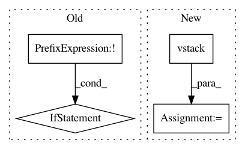

16d08e188b6db8a5ed0c16df16906a0e197d6505,scipy/sparse/dia.py,dia_matrix,setdiag,#dia_matrix#Any#Any#,187
Before Change
def setdiag(self, values, k=0):
M, N = self.shape
if (not k in self.offsets):
raise ValueError(
"dia matrix does not support assignment for unknown diagonals. "
"Known offsets are: %s" % self.offsets)
self.data[self.offsets == k, :] = values
setdiag.__doc__ = _data_matrix.setdiag.__doc__
After Change
def setdiag(self, values, k=0):
if k not in self.offsets:
self.offsets = self.offsets.append((k,))
self.data = self.data.vstack((self.data, values))
else:
self.data[self.offsets == k, :] = values
setdiag.__doc__ = _data_matrix.setdiag.__doc__
In pattern: SUPERPATTERN
Frequency: 3
Non-data size: 4
Instances
Project Name: scipy/scipy
Commit Name: 16d08e188b6db8a5ed0c16df16906a0e197d6505
Time: 2014-02-02
Author: perimosocordiae@gmail.com
File Name: scipy/sparse/dia.py
Class Name: dia_matrix
Method Name: setdiag
Project Name: ilastik/ilastik
Commit Name: c7f83e01b01f0c23050b63859dc9c1bf74acbc53
Time: 2013-07-31
Author: webmaster@burgerdev.de
File Name: lazyflow/operators/opInterpMissingData.py
Class Name: OpDetectMissing
Method Name: _detectMissing
Project Name: astroML/astroML
Commit Name: 4227f7c2810a6fc48165311e19a4a6aaac38475e
Time: 2019-04-16
Author: bsipocz@gmail.com
File Name: astroML/datasets/sdss_specgals.py
Class Name:
Method Name: fetch_sdss_specgals